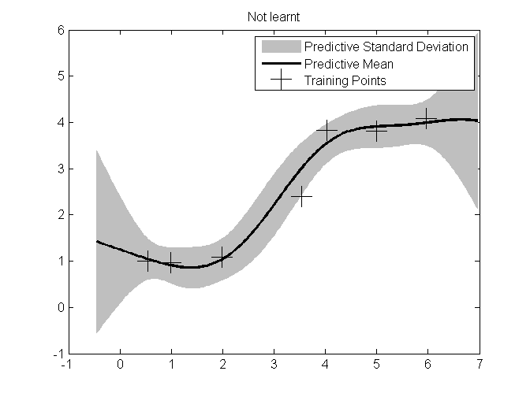

Gaussian Process Input Noise Demo
Contents
Add paths
close all; clear all; clear functions; clc; % Add working path p = pwd; root = strfind(p, 'geotherML')+9; slash = p(root); root = p(1:root); Libroot = [root, 'lib', slash]; addpath(genpath(Libroot))
Set up the input data
X = [-2.1775;-0.9235;0.7502;-5.8868;-2.7995;4.2504;2.4582;6.1426;... -4.0911;-6.3481;1.0004;-4.7591;0.4715;4.8933;4.3248;-3.7461;... -7.3005;5.8177;2.3851;-6.3772]'; y = [1.4121;1.6936;-0.7444;0.2493;0.3978;-1.2755;-2.221;-0.8452;... -1.2232;0.0105;-1.0258;-0.8207;-0.1462;-1.5637;-1.098;-1.1721;... -1.7554;-1.0712;-2.6937;-0.0329]';
X = [0.5470 0.9846 1.9866 3.5298 4.0250 4.9923 5.9597]; y = [1.0012 0.9672 1.0864 2.3978 3.8285 3.8114 4.0839]; [d n] = size(X); [X id] = sort(X); y = y(id); xstar = linspace(min(X)-1, max(X)+1, 201); % and query on a grid X_var = 0*ones(d,n); X_var(4) = 3; % Add variance to location of 4th point
Configure the standard GP model
GP = GP_STD(); GP.X = X; GP.y = y; GP.factorisation = 'SVD'; % 'SVD' or 'CHOL' or 'JITCHOL'
Mean Functions:
GP.MeanFn =GP_ConstantMean(mean(y));
Covariance Functions:
GP.CovFn = GP_SqExpNoisyCov(X_var);
% GP.CovFn = GP_SqExpCov();
Noise Functions:
GP.NoiseFn = GP_StatNoise();
Optimisation Parameters
Choose optimiser % defaults to fminunc
GP.solver_function = @fminunc; % GP.objective_function = @GP_LMLG_FN; GP.objective_function = @GP_CRSVAL_FN; % cross validation GP.optimset('gradobj', 'on');
Seed initial hyperparameters with auto-sized vectors
GP.covpar = 2.2*ones(1,GP.CovFn.npar(size(X,1))); GP.meanpar = zeros(1,GP.MeanFn.npar(size(X,1))); GP.noisepar = 0.25*ones(1,GP.NoiseFn.npar);
Solve the models
GP.solve(); [mf, vf] = GP.query(xstar); sf = sqrt(vf); % Display posterior figure plot(X, y, 'k+', 'MarkerSize', 17) f = [mf+2*sf,flipdim(mf-2*sf,2)]'; h(1) = fill([xstar, flipdim(xstar,2)], f, [6 6 6]/8, 'EdgeColor', [6 6 6]/8); hold on h(2) = plot(xstar,mf,'k-','LineWidth',2); h(3) = plot(X, y, 'k+', 'MarkerSize', 17); title('Not learnt'); legend(h,'Predictive Standard Deviation','Predictive Mean', 'Training Points')
